STM32 Ornithopter Control Board
Technical Design Document
Andrei Ayson
Bill of Materials
| Reference | Component | Value / Part | Purpose |
|---|---|---|---|
| Reference | Component | Value / Part | Purpose |
| U1 | Microcontroller | STM32F405RGT6 | Main controller for RC input reading, servo PWM output, USB, and future sensor expansion. |
| U2 | Buck converter | MP2359DJ-LF-Z | Steps the USB or battery input down to the 3.3 V rail. |
| U3 | USB ESD protection | USBLC6-2SC6 | Protects the USB D+ and D- lines. |
| Q1 | P-channel MOSFET | AO3401A | Battery-side high-side switching device. |
| Y1 | Crystal | 16 MHz | External clock source for the STM32. |
| L1 | Small inductor / ferrite element | 39 nH | Filters the analog supply rail going to VDDA. |
| L2 | Power inductor | 10 μH | Main inductor for the MP2359 buck converter. |
| D1 | Status LED | Blue LED | Visual indicator controlled by the STM32. |
| D2 | Schottky diode | B5819W | Freewheel diode for the buck converter. |
| D3 | Schottky diode | B5819W | Helps isolate the USB 5 V path. |
| D4 | Power LED | Red LED | Indicates that the 3.3 V rail is present. |
| F1 | Fuse | 250 mA | USB/input path current protection. |
| FB1 | Ferrite bead | 600 Ω at 600 MHz | Filters high-frequency noise on the input supply path. |
| SW1 | Switch | SPDT switch | BOOT0 configuration switch. |
| J1 | Battery connector | 2-pin JST | Main 7.4 V battery input. |
| J2 | Programming header | 10-pin SWD | STM32 programming and debugging. |
| J5 | USB connector | Micro-USB | USB data and USB 5 V input. |
| J7 | RC receiver connector | 3-pin header | Connects receiver signal, power, and ground. |
| J8, J9 | Servo connectors | 3-pin headers | Connect servo signal, battery power, and ground. |
| HD0521MG | Coreless digital servo | 4.8 V–8.4 V, 333 Hz | Servo actuation for the ornithopter. |
| RadioLink T8S | RC transmitter | 8-channel transmitter | Sends user control commands. |
| RadioLink R8EF | RC receiver | 8-channel receiver | Outputs PWM signal to the STM32 RC input. |
| Reference | Value | Purpose |
|---|---|---|
| Reference | Value | Purpose |
| C1, C2 | 2.2 μF | VCAP capacitors for STM32 internal regulator stability. |
| C3 | 4.7 μF | Bulk capacitance on the 3.3 V rail. |
| C4–C8 | 100 nF | Local digital supply decoupling for STM32 VDD pins. |
| C9 | 1 μF | Bulk filtering for the STM32 analog supply rail. |
| C10 | 10 nF | High-frequency filtering for the STM32 analog supply rail. |
| C11, C12 | 10 pF | Load capacitors for the 16 MHz crystal. |
| C13 | 10 μF | Input capacitor for the MP2359 buck converter. |
| C14 | 10 nF | Bootstrap capacitor for the MP2359 buck converter. |
| C15, C16 | 10 μF | Output capacitors for the regulated 3.3 V rail. |
| C17, C21, C23, C24 | 47 μF | Bulk capacitors near the servo power connectors. |
| C18 | 10 μF | Bulk capacitor near the RC receiver connector. |
| C19, C20, C22 | 100 nF | High-frequency decoupling near servo and RC connectors. |
| R1 | 10 k Ω | BOOT0 configuration resistor. |
| R2 | 47 Ω | Series resistor in the crystal circuit. |
| R3 | 1.5 k Ω | Current-limiting resistor for the blue status LED. |
| R4 | 100 k Ω | Part of the buck enable/input control resistor network. |
| R5 | 68 k Ω | Part of the buck enable/input control resistor network. |
| R6 | 47 k Ω | Top resistor in the MP2359 feedback divider. |
| R7 | 15 k Ω | Middle resistor in the MP2359 feedback divider. |
| R8 | 270 Ω | Bottom resistor in the MP2359 feedback divider. |
| R11–R13 | 470 Ω | Series resistors for servo and RC signal lines. |
| R15 | 1 k Ω | Current-limiting resistor for the red power LED. |
System Overview
The purpose of this project was to design a custom STM32-based control board for a butterfly-inspired ornithopter platform. The board handles the electronic control side of the project, including RC receiver input, servo PWM output, USB connection, programming access, and power regulation.
The STM32F405RGT6 was selected as the main controller because it has enough timer peripherals for RC signal measurement and servo PWM generation, while also supporting USB and SWD programming. The STM32F405/F407 datasheet lists the device family as using an ARM Cortex-M4 core with FPU, operating up to 168 MHz, and including USB support, timers, ADCs, and SWD/JTAG debugging .
The board has several main subsystems:
Power input and regulation circuitry.
STM32 microcontroller support circuitry.
USB interface and ESD protection.
SWD programming and debugging connector.
RC receiver input.
Servo output connectors.
PCB layout and physical board integration.
The board can be powered either from USB 5 V or from a 7.4 V battery input. The USB input is mainly useful for bench testing, basic board bring-up, and firmware development. The battery input is intended for normal ornithopter operation, especially when servos are connected and drawing current.
The STM32 itself is not powered directly from USB 5 V or from the 7.4 V battery. Both power sources feed the input side of the power system, and the MP2359 buck converter generates the regulated 3.3 V rail used by the STM32.
Ornithopter Platform
The ornithopter body was designed to look and flap more like a butterfly rather than a typical fixed-wing aircraft. The physical design is included here to show the actual platform that the PCB is being designed for. The PCB is the control system, while the body is the mechanical system that the electronics are meant to support.
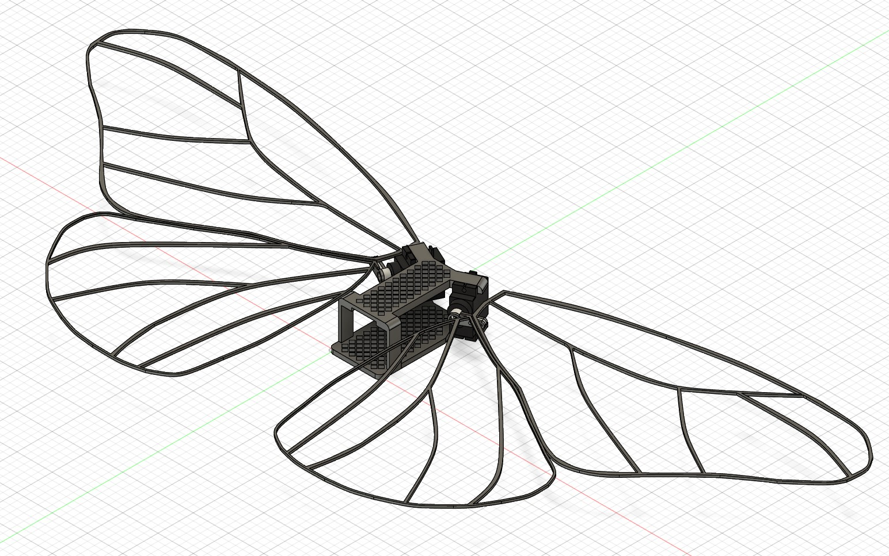
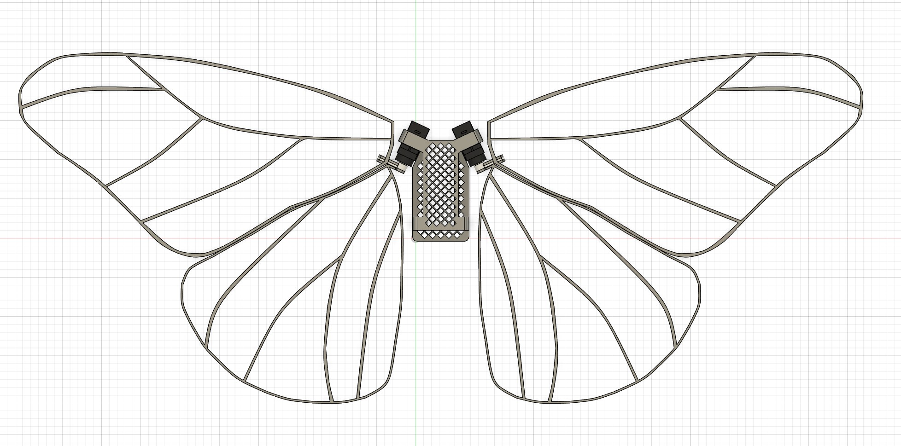
The body design gives the project more context as the electronics are not meant to be a generic STM32 breakout board. The control board is part of a larger mechatronic system where the RC input, servo control, power delivery, and physical wing motion all connect together.
Complete Schematic
The general STM32 hardware design process was based heavily on the Phil’s Lab STM32 hardware design tutorial , while the final schematic organization, connector choices, and PCB layout were modified for the ornithopter control board application.
The full schematic is divided into three major areas: power circuitry, STM32 microcontroller circuitry, and connector/USB circuitry. The top section contains the power circuitry. The lower left section contains the STM32F405RGT6 microcontroller and its support components. The lower right section contains the USB connector, ESD protection device, SWD connector, RC receiver connector, and servo connectors.
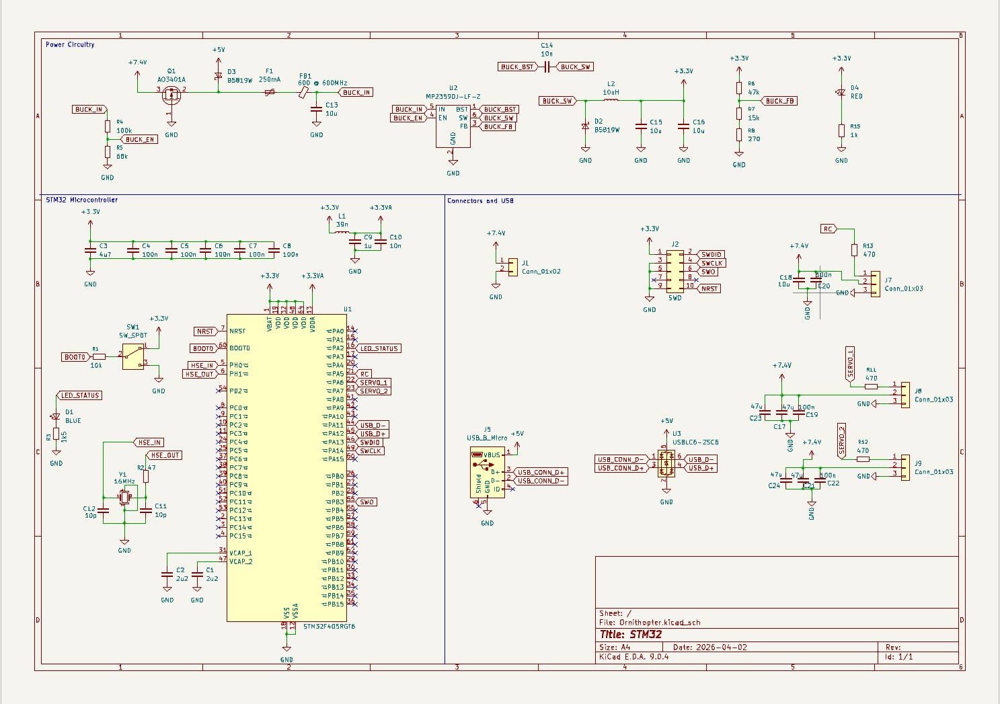
Power Circuitry
The power circuitry has to support both low-current digital electronics and higher-current external devices. The STM32 needs a clean 3.3 V rail, while the RC receiver and servos can inject noise or pull current in pulses. The board was designed so it can be powered from USB during bench testing or from a 7.4 V battery during ornithopter operation.
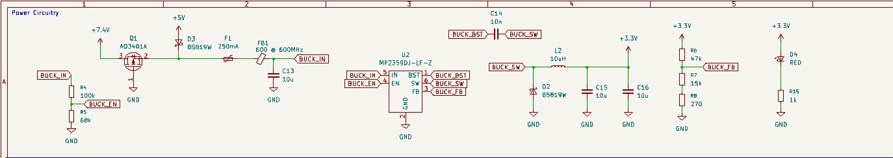
There are two main input power sources on the board. The first is the USB 5 V input from the Micro-USB connector. This is useful for programming, firmware testing, and basic board bring-up. The second is the 7.4 V battery input through connector J1, which is intended for normal ornithopter testing where the servos and receiver are powered.
The +5V label in the schematic refers to the USB VBUS
rail. It is not the voltage that directly powers the STM32. The STM32 is
only powered from the regulated 3.3 V rail.
The battery input is labeled +7.4V. This is the nominal
voltage of a 2-cell lithium battery. A fully charged 2-cell lithium
battery can be higher than 7.4 V, so the regulator needs to tolerate
more than the nominal voltage. The MP2359 is a good fit here because its
recommended operating input range is 4.5 V to 24 V .
The USB connector provides the board with a 5 V VBUS input. This rail passes through D3, F1, and FB1 before reaching the buck converter input node. D3 is a Schottky diode that helps prevent current from flowing backward into the USB port when the board is powered by the battery. F1 adds basic current protection, and FB1 helps reduce high-frequency noise moving along the USB/input power path.
USB is useful, but it should not be treated like the main flight power source. USB is best for programming, debugging, and powering the STM32 with light loads. The battery input is the better source when the servos are connected and moving.
The battery power path enters through J1 and is labeled
+7.4V. The battery side includes Q1, an AO3401A P-channel
MOSFET. In this design, Q1 works as a high-side switching device for the
battery rail. A P-channel MOSFET is useful here because it lets the
positive rail be switched while keeping the ground reference common
across the whole board.
The gate behavior is controlled by the surrounding resistor network. When the gate-source voltage becomes negative enough, the P-channel MOSFET turns on and allows the battery to feed the board. When the gate is pulled closer to the source voltage, the MOSFET turns off.
The board uses the MP2359DJ-LF-Z as the 3.3 V switching regulator. The MP2359 datasheet describes it as a monolithic step-down converter with a built-in power MOSFET, current-mode operation, cycle-by-cycle current limiting, thermal shutdown, and a fixed 1.4 MHz switching frequency . It is also listed as supporting a 1.2 A peak output current and being stable with low-ESR ceramic output capacitors .
A buck converter is used instead of a linear regulator because the input can be much higher than 3.3 V. If the board is powered from a 7.4 V battery, a linear regulator would have to drop about
as heat. That is wasteful on a small board. The buck converter is better because it stores and transfers energy through the inductor instead of burning off the voltage difference as heat.
The MP2359 regulates its output using the feedback pin. The datasheet gives the typical feedback voltage as 0.810 V . The feedback divider in this design is made from R6, R7, and R8. In a normal feedback divider, the output voltage is set by
The feedback pin watches the divided-down version of the 3.3 V rail. If the feedback voltage is too low, the regulator increases the energy delivered to the output. If the feedback voltage is too high, it reduces the energy delivered.
L2 is the 10 μH inductor used by the buck converter. When the MP2359 switch is on, current increases through the inductor and energy is stored in its magnetic field. When the switch turns off, the inductor keeps current flowing through D2 and into the output capacitors and load. D2 is the external Schottky diode used in the switching path.
C13 is the input capacitor. It helps keep the regulator input stable because the buck converter draws pulsed current. C14 is the bootstrap capacitor between the BST and SW nodes. The MP2359 datasheet describes the bootstrap capacitor as part of the floating supply used to drive the internal power switch gate . C15 and C16 are output capacitors that smooth the 3.3 V rail.
D4 and R15 form the 3.3 V power indicator LED. This is useful during testing because it gives a quick visual check that the buck converter is producing the logic rail.
STM32 Microcontroller Circuitry
The STM32F405RGT6 support circuitry includes the power pins, decoupling capacitors, analog supply filtering, VCAP capacitors, external crystal, BOOT0 circuit, reset line, USB pins, SWD pins, RC input, servo outputs, and status LED.
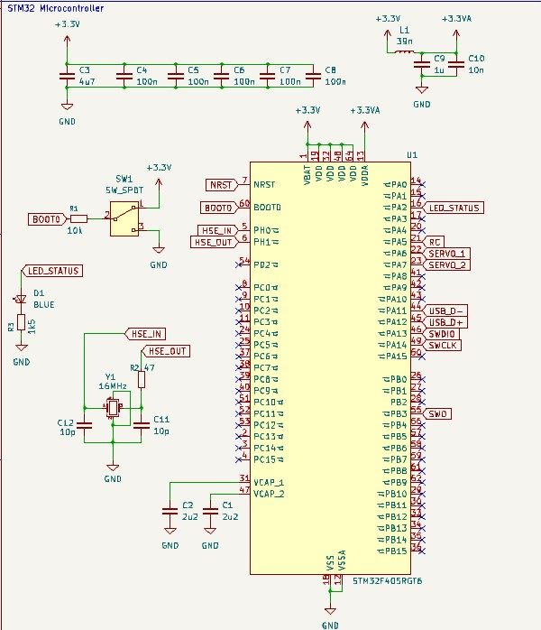
The STM32F405RGT6 was selected because it has enough timing peripherals and I/O for an RC-controlled robotics board. The STM32F405/F407 family includes an ARM Cortex-M4 core with floating point support, up to 168 MHz operation, USB support, ADCs, and many timers . The timer hardware is especially important because the board needs to measure RC pulse widths and generate servo PWM signals.
RC and servo control are timing-based. The board should not rely on software delay loops for those signals. Hardware timers make the control signals more consistent and leave the CPU free for other tasks later, such as stabilization or sensor processing.
The STM32CubeMX pinout assignment includes the external oscillator pins, USB pins, SWD programming pins, status LED output, RC input, and servo outputs.
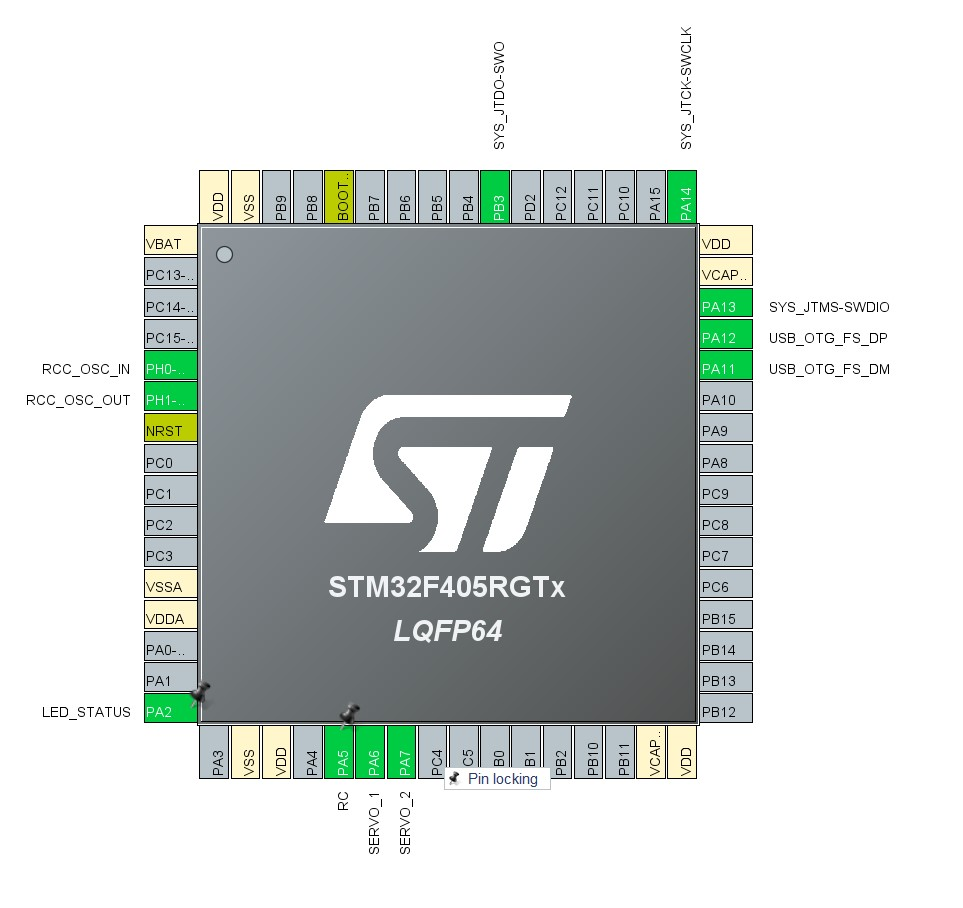
| Signal | STM32 Pin | Purpose |
|---|---|---|
| HSE_IN | PH0 | External crystal input. |
| HSE_OUT | PH1 | External crystal output. |
| LED_STATUS | PA2 | Drives the blue status LED. |
| RC | PA5 | Reads the RC receiver signal. |
| SERVO_1 | PA6 | Outputs PWM signal to servo 1. |
| SERVO_2 | PA7 | Outputs PWM signal to servo 2. |
| USB_D- | PA11 | USB OTG full-speed differential data minus. |
| USB_D+ | PA12 | USB OTG full-speed differential data plus. |
| SWDIO | PA13 | SWD programming/debug data line. |
| SWCLK | PA14 | SWD programming/debug clock line. |
| SWO | PB3 | Optional serial wire output debug signal. |
| BOOT0 | BOOT0 | Selects boot mode during reset. |
| NRST | NRST | Reset input for the STM32. |
The STM32F405 uses a 1.8 V to 3.6 V application supply and I/O supply range according to the datasheet . Because of this, the STM32 cannot be powered directly from USB 5 V or from the 7.4 V battery. The MP2359 buck converter creates the regulated 3.3 V rail, and that rail powers the STM32 VDD pins.
Using 3.3 V also makes sense because it gives full-speed digital operation while staying inside the STM32 supply limit. The 3.3 V rail is used for the digital supply pins and the analog supply filtering network.
C4 through C8 are 100 nF decoupling capacitors placed on the 3.3 V rail near the STM32 supply pins. These capacitors are there because the STM32 current demand changes quickly when internal logic switches. The small capacitors provide a local charge source for fast current spikes.
C3 is a 4.7 μF bulk capacitor on the same rail. This helps with slower and larger changes in current demand. The small 100 nF capacitors handle higher-frequency noise, while the larger capacitor helps stabilize the rail overall.
C1 and C2 are both 2.2 μF capacitors connected to the STM32 VCAP pins. These pins support the STM32 internal voltage regulator. The datasheet states that regulator stabilization is achieved by connecting external capacitors to VCAP1 and VCAP2 . These are not general-purpose supply outputs and should not be used to power external circuits.
Leaving out the VCAP capacitors can prevent the STM32 from running correctly. In this board, both VCAP pins are given their own 2.2 μF capacitor to ground.
The analog supply rail is labeled +3.3VA. It is created
from the normal 3.3 V rail through L1 and is filtered with C9 and C10.
C9 is 1 μF, and C10 is 10 nF. The point of this network is to keep the
analog supply cleaner than the digital supply.
Even if the first version of the board is mostly using digital RC and servo signals, analog supply filtering is still worth including. It keeps the design ready for future analog features like battery voltage sensing, current sensing, or other sensor inputs.
The board schematic uses Y1 as the external crystal connected to PH0 and PH1. The STM32 datasheet gives the HSE oscillator frequency range as 4 MHz to 26 MHz, so 16 MHz is within the supported range . C11 and C12 are load capacitors connected to ground.
The crystal load capacitors should be selected based on the crystal requirements, while also accounting for board and pin capacitance . The crystal should be placed close to the STM32 pins because long traces add parasitic capacitance and can pick up noise.
The external crystal is useful because USB timing depends on an accurate clock. The STM32 USB full-speed peripheral needs a dedicated 48 MHz clock generated by a PLL connected to the HSE oscillator .
The BOOT0 circuit uses R1 and SW1 to control the STM32 boot mode. In normal operation, BOOT0 should be held low so the STM32 boots from user flash memory. If BOOT0 is pulled high during reset, the STM32 can enter its built-in bootloader mode.
This is useful during board bring-up because it gives another recovery path. If the firmware is broken or the normal programming method is being weird, the bootloader mode can help recover the chip.
D1 and R3 form the blue status LED circuit. The LED is connected to
the LED_STATUS signal from the STM32. This LED is useful
during initial bring-up because a blink test can confirm several things
at once. It shows that the STM32 is receiving power, the clock
configuration is working, the firmware uploaded successfully, and the
GPIO pin is operating.
Clock Configuration
The clock configuration matters because the USB peripheral, RC input capture, and servo PWM outputs all depend on accurate timing. The clock tree was configured in STM32CubeMX using the external high-speed oscillator as the PLL source.
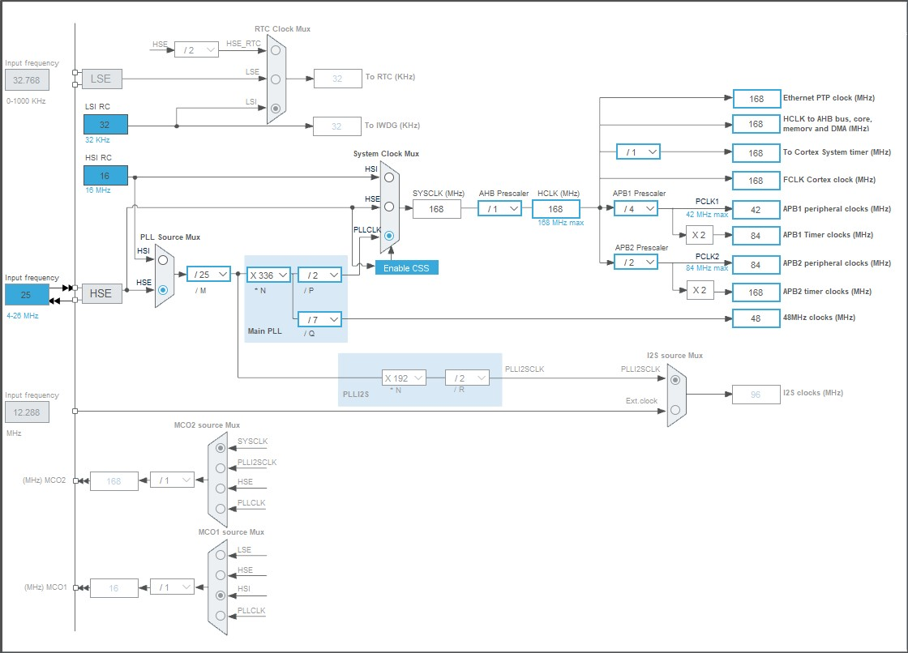
RC Input and Servo Control
The board interfaces with a RadioLink T8S transmitter and R8EF receiver system. The receiver provides the command signal to the STM32, and the STM32 generates PWM signals for the servos. This lets the ornithopter be controlled from a normal RC transmitter while still allowing the STM32 to process the signal in firmware.
The RadioLink T8S is an 8-channel remote controller, and the R8EF is the matching 8-channel receiver. The receiver can output normal PWM signals, and it can also be switched into a mode where it provides SBUS and PPM outputs. For this board, the important mode is PWM signal mode because the STM32 reads an RC pulse directly through a timer input capture pin.
The R8EF receiver operates from 3 V to 15 V DC and draws about 38 mA–45 mA at 5 V. The T8S manual lists the PWM output range as 1.0 ms to 2.0 ms, with a frame cycle of 15 ms . This means the receiver sends a repeating pulse, and the pulse width represents the joystick command.
The STM32 reads this signal on the pin labeled RC. In
the CubeMX configuration, this pin is assigned to a timer input capture
channel. Input capture is useful because the timer hardware can record
the time when a rising edge occurs. Then the firmware can measure the
time to the falling edge and calculate the pulse width.
The pulse width is calculated as
For a typical RC signal,
A centered command is normally near
This gives a simple way to convert the RC signal into a normalized command:
A 1.0 ms pulse gives approximately , a 1.5 ms pulse gives , and a 2.0 ms pulse gives .
The RC input uses TIM2 in input capture mode. In the CubeMX setup, TIM2 Channel 1 is configured for input capture direct mode on the rising edge. From the clock configuration, TIM2 is clocked at 84 MHz. The prescaler is set to 83, which produces a timer tick of
A 1 MHz timer tick means each count is
That works well for reading RC pulse widths because the receiver pulses are measured in microseconds. A 1500 μs center pulse would correspond to about 1500 timer counts.
For example,
The servos used for the ornithopter are HD0521MG coreless digital servos. These servos are useful for this project because they are small, lightweight, and designed for higher-voltage operation. The servo specification image lists the operating voltage as 4.8 V–8.4 V, which makes the board’s 7.4 V servo rail reasonable for this setup.
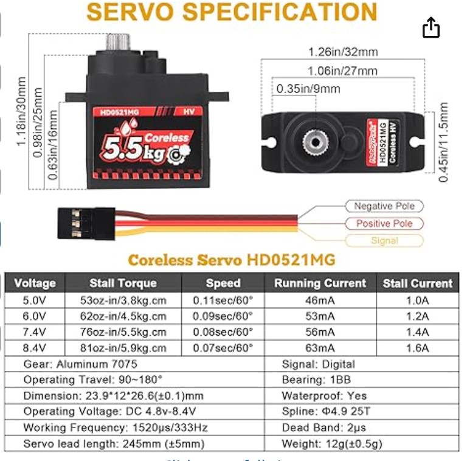
At 7.4 V, the servo specification lists a stall torque of 5.5 kg cm, a speed of 0.08 s/60, a running current of 56 mA, and a stall current of 1.4 A . The stall current matters because servos do not always draw their small running current. If the wing mechanism jams, loads up, or moves quickly, the current can spike much higher.
This is one of the reasons the board includes local capacitors near the servo connectors. The STM32 itself does not need large current, but the servos can create sudden current demands. Without local capacitance, those current spikes can cause the supply rail to dip, which can introduce noise or even reset the microcontroller.
The servo outputs use TIM3 Channel 1 and TIM3 Channel 2 in PWM generation mode. In the CubeMX setup, the prescaler is set to 83 and the auto-reload value is set to 2999. From the clock configuration, TIM3 is also clocked at 84 MHz. The timer tick is
The PWM period is then
Using ,
So the PWM frequency is
This matches the servo specification, which lists a working frequency of 333 Hz. The pulse value in CubeMX is set to 1520, which corresponds to
That is the neutral pulse width listed in the servo specification.
The servos are powered from the 7.4 V rail instead of the STM32 3.3 V rail. This is important because the STM32 rail is only meant for logic and low-current electronics. The servos need their own higher-voltage power rail because they are electromechanical loads.
The servo signal wire is still driven by the STM32. The signal line goes through a 470 Ω series resistor before reaching the connector. This resistor helps limit current into or out of the STM32 pin during switching, ringing, or wiring mistakes.
| Servo Pin | Board Net | Purpose |
|---|---|---|
| Signal | SERVO_1 or SERVO_2 | PWM command from STM32 through a 470 Ω resistor. |
| Positive | 7.4 V rail | Servo power supply. |
| Ground | GND | Common ground reference. |
USB, SWD, and Connectors
This section includes the Micro-USB connector, USB ESD protection chip, SWD programming header, battery connector, RC receiver connector, and servo connectors.
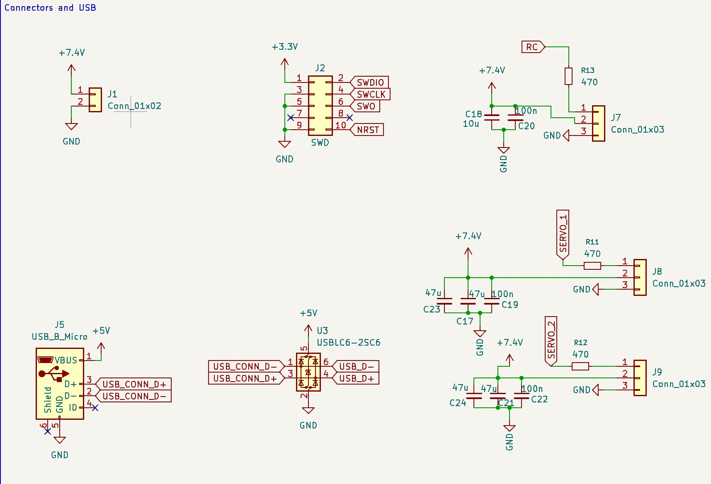
The Micro-USB connector provides the USB D+ and D- signals. These signals pass through U3, the USBLC6-2SC6 ESD protection device, before going to the STM32 USB pins. The point of this part is to protect the STM32 from electrostatic discharge that can enter through the USB cable.
USB data lines are more sensitive than a normal GPIO signal because they are a differential high-speed interface. The data traces should be kept short, routed cleanly, and protected near the connector.
J2 is the SWD programming connector. It exposes SWDIO,
SWCLK, SWO, NRST, 3.3 V, and
ground. The STM32 datasheet lists SWD/JTAG as supported debug interfaces
. This connector
allows the STM32 to be programmed and debugged even if USB firmware is
not working yet.
SWDIO and SWCLK are the main
programming/debugging signals. NRST allows the programmer
to reset the chip during flashing. SWO is optional, but it
can be useful for debug output while the firmware is running.
J7 is the RC receiver connector. The RC signal passes through R13, a 470 Ω series resistor, before reaching the STM32. The resistor helps limit current into the STM32 pin if there is signal ringing, accidental contention, or some kind of mild mismatch. The R8EF receiver can operate from 3 V to 15 V DC, so the receiver is compatible with the board’s receiver power connection of 7.4 V .
J8 and J9 are the servo output connectors. The servo signal lines are connected through R11 and R12, which are both 470 Ω. These series resistors help reduce ringing and give the STM32 pins some protection. The servo power pins are tied to the 7.4 V rail, while the signal pins are driven by the STM32. The servo connectors also have local capacitors nearby. C17, C21, C23, and C24 are 47 μF bulk capacitors, while C19 and C22 are 100 nF capacitors.
PCB Layout and 3D Board View
The PCB was designed as a 4-layer board. The layout includes signal routing layers, a dedicated ground plane, and a dedicated 3.3 V power plane. Using internal planes makes the board cleaner electrically because the STM32 and support circuitry have a low-impedance ground return and a more stable logic supply rail.
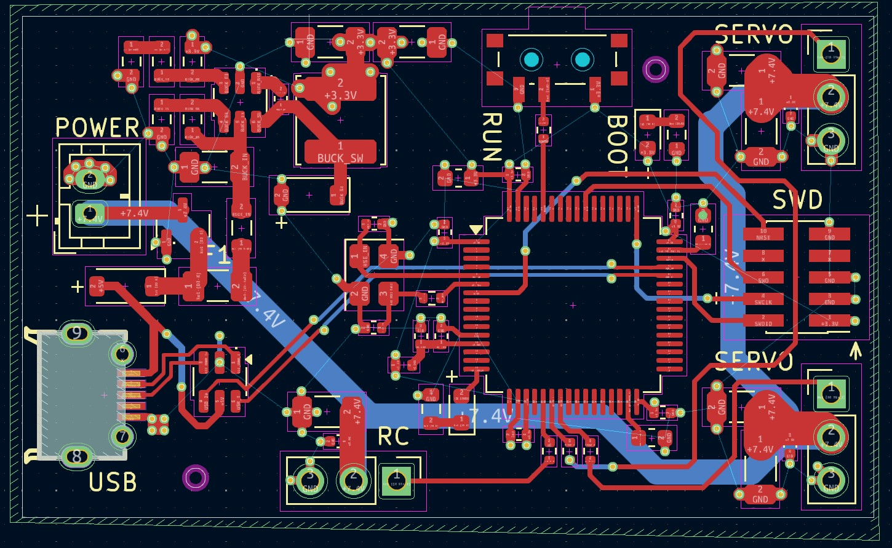
The dedicated ground plane is especially useful because it gives return current a short and direct path back to the source. This matters for the STM32, USB signals, clock circuitry, and switching regulator because all of these parts can be affected by noisy or poorly controlled return paths. A solid ground plane also helps reduce voltage differences across the board and improves overall signal integrity.
The internal 3.3 V plane distributes the regulated logic supply to the STM32 and nearby support components. This helps keep the 3.3 V rail more stable than routing it only through thin traces. The local decoupling capacitors near the STM32 still matter, but the power plane gives the board a stronger supply structure overall. The higher-current 7.4 V battery and servo paths are routed with wider copper areas and traces because the servos can draw much more current than normal GPIO or logic signals.
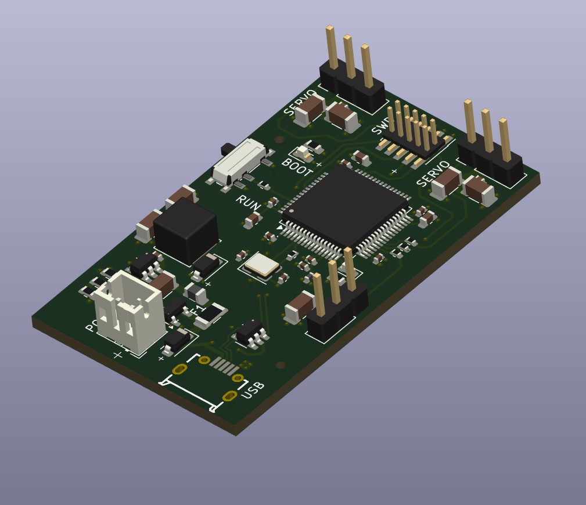
Testing and Bring-Up
The first bring-up step is to power the board and confirm that the 3.3 V rail is present. The red power LED provides a quick visual check, but the rail should still be measured with a multimeter before assuming everything is safe.
After confirming the 3.3 V rail, the next step is programming the STM32 through the SWD header. A simple LED blink program can test the microcontroller, clock configuration, GPIO output, and programming setup. Once the status LED works, the next tests should be USB detection, RC receiver pulse reading, and servo PWM output.
| Test | Purpose |
|---|---|
| Check for shorts between power and ground | Makes sure the board is not shorted before applying power. |
| Measure 3.3 V rail | Confirms the regulator is producing the STM32 logic voltage. |
| Confirm power LED turns on | Quick visual indication that the 3.3 V rail is present. |
| Program STM32 through SWD | Confirms the SWD header, reset line, and programming setup. |
| Blink status LED | Confirms basic firmware execution and GPIO output. |
| Test USB detection | Confirms USB routing and clock configuration. |
| Read RC pulse width | Confirms the RC input pin and timer input capture setup. |
| Output servo PWM | Confirms the servo signal pins and PWM timer setup. |
| Test with servo load | Checks whether servo current spikes disturb the power system. |
The successful LED blink test is an important early result. It means the STM32 is receiving power, the SWD programming path works, and the firmware is running. After that, the more specific tests can build on the same setup instead of debugging everything at once.
Design Limitations and Future Improvements
The current board works as a first version of the ornithopter control system, but there are still some upgrades that would make the design more capable in a future revision.
One useful improvement would be adding an inertial measurement unit, or IMU. An IMU would allow the STM32 to measure motion data such as pitch, roll, and angular velocity. This would make the board more useful for actual flight control because the firmware could respond to the movement of the ornithopter instead of only sending direct servo commands from the RC receiver.
Another improvement would be battery voltage sensing. A simple resistor divider connected to one of the STM32 ADC pins could allow the microcontroller to monitor the battery voltage during operation. This would be useful because the system is powered from a 7.4 V battery, and the STM32 could eventually warn the user or change behavior when the battery gets too low.
A future revision could also include current sensing for the servo rail. Since the servos are mechanical loads, their current draw changes depending on how much force they need to apply. Measuring servo current would make it easier to see how much electrical load the wing mechanism creates during movement.
Overall, the next version of the board would mainly focus on adding sensing and feedback. The current design handles power, STM32 control, RC input, and servo PWM output, while future additions like an IMU, battery monitoring, and current sensing would make the system more useful for closed-loop control and flight testing..
Conclusion
This project designed a custom STM32-based control board for a butterfly-inspired ornithopter platform. The board includes the STM32F405RGT6 microcontroller, USB interface, SWD programming support, RC receiver input, servo output connectors, and a buck converter power supply.
The power system allows the board to be powered from either USB 5 V or a 7.4 V battery input. The MP2359 buck converter regulates the input down to 3.3 V, which is required for the STM32. The STM32 circuitry includes the required decoupling capacitors, VCAP capacitors, analog supply filtering, external crystal, BOOT0 control, reset access, and status LED.
The RC and servo interface connects the electronics to the actual ornithopter system. The R8EF receiver provides a PWM command signal, and the STM32 reads that signal using timer input capture. The STM32 then generates servo PWM using hardware timers. The servo timer settings were selected to produce a 333 Hz PWM frequency with a 1520 μs neutral pulse, matching the HD0521MG servo specification.
Overall, the board provides the basic electrical platform needed to control the ornithopter mechanism. The current design is suitable for firmware bring-up, RC signal reading, and servo PWM testing. Future improvements could include an IMU, battery voltage monitoring, and additional power isolation for the servo rail.
9
Phil’s Lab, KiCad STM32 + USB + Buck Converter PCB Design and JLCPCB Assembly - Phil’s Lab #11, YouTube video. Available: https://www.youtube.com/watch?v=C7-8nUU6e3E. This video was used as the main design reference for the STM32 hardware setup, including the microcontroller support circuitry, USB/SWD setup, buck converter design, and PCB layout workflow. The final board was modified for the ornithopter application by rearranging components, selecting project-specific connectors, and making the layout as compact as reasonably possible.
STMicroelectronics, STM32F405xx and STM32F407xx Datasheet. The datasheet lists the STM32F405/F407 family as ARM Cortex-M4 microcontrollers with up to 168 MHz operation, USB support, timer peripherals, SWD/JTAG debugging, and a 1.8 V to 3.6 V application supply range.
STMicroelectronics, STM32F405xx and STM32F407xx Datasheet, VCAP external capacitor section. The datasheet states that the VCAP1 and VCAP2 pins require external capacitors for internal regulator stabilization.
STMicroelectronics, STM32F405xx and STM32F407xx Datasheet, HSE oscillator section. The datasheet lists the HSE oscillator range as 4 MHz to 26 MHz and discusses selecting external ceramic load capacitors based on crystal requirements.
STMicroelectronics, STM32F405xx and STM32F407xx Datasheet, USB OTG full-speed section. The datasheet states that the USB OTG full-speed peripheral requires a dedicated 48 MHz clock generated by a PLL connected to the HSE oscillator.
Monolithic Power Systems, MP2359 1.2A, 24V, 1.4MHz Step-Down Converter Datasheet. The datasheet describes the MP2359 as a monolithic step-down converter with a built-in MOSFET, 1.2 A peak output current, 4.5 V to 24 V recommended input range, 1.4 MHz switching frequency, 0.810 V typical feedback voltage, cycle-by-cycle current limiting, and thermal shutdown.
RadioLink, T8S(BT) 8-Channel Remote Controller User Manual. The manual lists the T8S and R8EF specifications, including 8-channel operation, R8EF PWM/SBUS/PPM output modes, R8EF 3 V–15 V operating voltage, and 1.0 ms–2.0 ms PWM output range.
HD0521MG product specification image, Coreless Servo HD0521MG. The specification lists 4.8 V–8.4 V operating voltage, 1520 μs/333 Hz working frequency, 12 g weight, and current/torque values at 5.0 V, 6.0 V, 7.4 V, and 8.4 V.